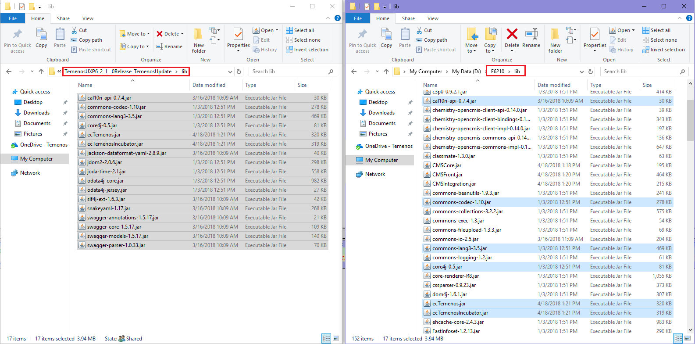
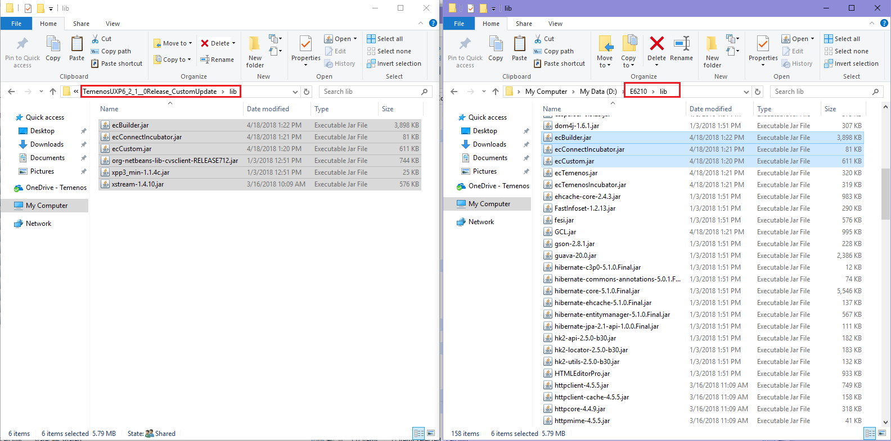
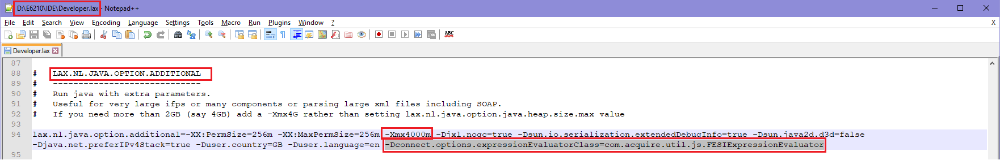
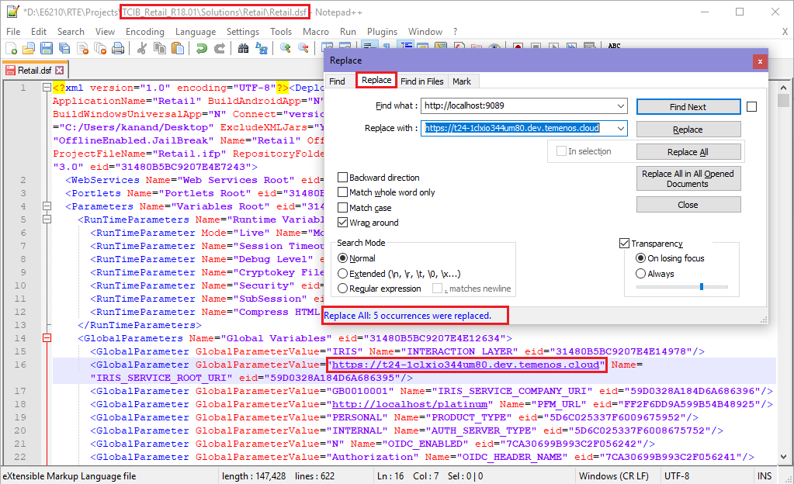
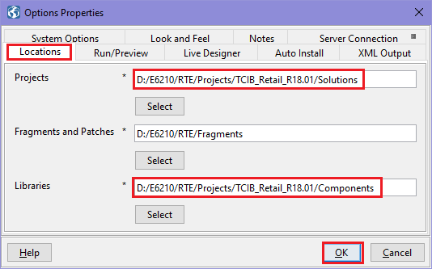
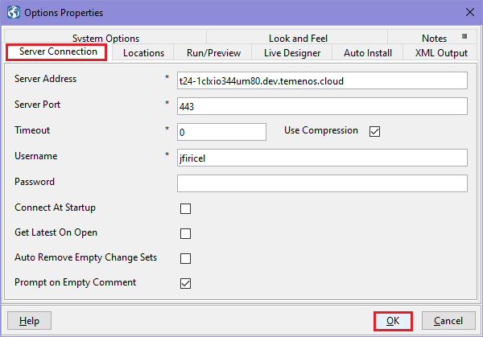

Install User Experience Platform
- Please download from your MyApps section the Temenos User Experience Platform product.
Create a folder where Temenos UXP should be installed on your computer.
Note
💡 In order to avoid Windows problems, please use short paths.
- Example: For the purpose of this document and a better understanding, a folder called E6210 is created directly on D partition.
- Example: For the purpose of this document and a better understanding, a folder called E6210 is created directly on D partition.
Unzip Temenos UXP folder and launch UXP installation by double clicking on appropriate installation file.
- Example: TemenosUXP6_2_1__0_x64Windows.exe
- Example: TemenosUXP6_2_1__0_x64Windows.exe
UXP installation starts (InstallAnywhere is preparing to install...)
- Click next to pass through installation steps.
- On License Agreement, accept Terms and Agreements.
- On Install Set, you can also check 'Hybrid Master' and 'Hybrid Android Slave' if you need it (in this case, Install Set will automatically change to 'Custom')
- On Install Folder, do not leave default path. Instead, select the folder you created before for UXP installation (Example: E6210)
- Choose UXP shortcut location. (Example: "In a new Program Group")
- Choose a JDK version (select appropriate path where Java Development Kit is installed)
- Set the address and the port:
- Hybrid Master address: localhost
- Hybrid Master port: 9022
- Set the address and the port:
- See all information in pre-installation summary and press install button.
Wait for installation to be completed.
Note
Please send license email request, attaching InstallKey.txt present in IDE folder, to marketplace@temenos.com. You will receive one license file, which must be placed in the same folder (IDE).
Install TemenosUpdate.zip file
- a. Unzip the TemenosUXP6_2_1__0Release_TemenosUpdate.zip archive.
- b. Copy the jars from the above archive into the lib folder of Temenos UXP (in current case E6210 - in your case, the folder you created to install Temenos UXP).
- 
c. Update Developer.lax file (from IDE folder) in order to add the jars copied in above step. Click right on developer.lax file, go to "LAX.CLASS.PATH=" and add at the end the new jars as follows:
;../lib/cal10n-api-0.7.4.jar;../lib/commons-codec-1.10.jar;../lib/commons-lang3-3.5.jar;../lib/core4j-0.5.jar;../lib/ecTemenos.jar;../lib/ecTemenosIncubator.jar;../lib/jackson-dataformat-yaml-2.8.9.jar;../lib/jdom2-2.0.6.jar;../lib/joda-time-2.1.jar;../lib/odata4j-core.jar;../lib/odata4j-jersey.jar;../lib/slf4j-ext-1.6.3.jar;../lib/snakeyaml-1.17.jar;../lib/swagger-annotations-1.5.17.jar;../lib/swagger-core-1.5.17.jar;../lib/swagger-models-1.5.17.jar;../lib/swagger-parser-1.0.33.jarNote
Based on the version you're using, you might have other jars to copy.
Install CustomUpdate.zip file
- a. Unzip the TemenosUXP6_2_1__0Release_CustomUpdate.zip archive.
- b. Copy the jars from the above archive into the lib folder of Temenos UXP.
- 
c. Update Developer.lax file (from IDE folder) in order to add the jars copied in above step. See information from previous step.
;../lib/ecBuilder.jar;../lib/ecConnectIncubator.jar;../lib/ecCustom.jar;../lib/org-netbeans-lib-cvsclient.jar;../lib/xpp3_min-1.1.4c.jar;../lib/xstream-1.4.9.jarNote
Based on the version you're using, you might have other jars to copy.
Update the java extra parameters in Developer.lax file (from IDE folder):
- LAX.NL.JAVA.OPTION.ADDITIONAL
- Please add below line:
- -Dconnect.options.expressionEvaluatorClass=com.acquire.util.js.FESIExpressionEvaluator
- In case out of memory issues are encoutered ensure you increase the memory value as per your needs.
- 
- Please add below line:
- LAX.NL.JAVA.OPTION.ADDITIONAL
Import Retail package in UXP
- Please download from your MyApps section the Temenos UXP Retail Developer Package product.
- Unzip the Retail_Developer_Package_xx.zip package, unzip the TCIB2.0_Retail_Developer_Release_xx.zip file and then copy the TCIB folder somewhere on your machine. (Example: Your Folder > RTE > Projects)
- Go and update Retail.dsf file (which is found in \TCIB\Solutions\Retail\ location) in order to replace "http://localhost:9089" with your own correspondent url.
- (There are 5 places to be replaced.)
- 
- Open the Developer.exe file (from IDE folder)
- Go to File > Open
- Select the location of Retail.ipf file (it should be something like \TCIB\Solutions\Retail\)
- A warning will appear > Accept language setup
- Open Process Builder:
- On top bar, click on "No Perspective" and select "Process Builder" (this will open UXP editors)
- Set file location and server connection
- On top bar, go to Tools > Options
- Select the appropriate file locations:
- 
- Select the appropriate server details:
- Server Address: your own url
- Server Port: your port
- 
Close and open again the Developer.exe file (from IDE folder).
Note
The TCMB installation should be done in the same manner explained above.